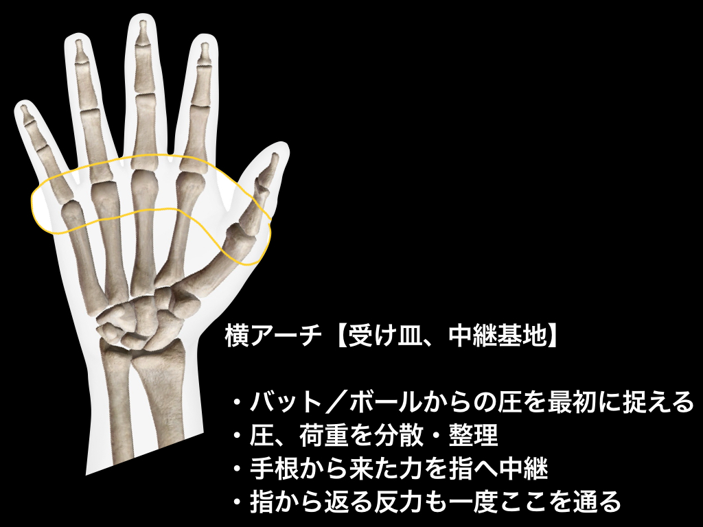

上手い選手は、
同じ方向・同じタイミング・同じ形を繰り返せる。
再現性とは、
力を足すことではない。
圧を受け取る場所を固定すること。
・毎回グリップが違う
・インパクトの位置がバラつく
・体の調子で結果が変わる
原因はひとつ。
受け取る場所が毎回違う。

足底でいう「横アーチ」と同じ役割が、
手のひらにもある。
圧を受ける場所は
MP関節ライン（指の付け根）
指で掴まない。
手首を固めない。
手のひらの横幅で受ける。
内容
パートナーと向かい合う
胸の高さでMBを軽くパス
MP関節ラインで受ける
意識
指は添えるだけ
手のひらの横幅で止める
回数
左右10回 ×2セット
グリップ再現性の土台作り
内容
① 構える
② 骨盤を前に向ける
③ その瞬間にMBを受ける
意識
体 → 手の順
手が先に動かない
回数
左右8回 ×2セット
出力方向と受圧位置を一致させる
内容
パートナーが足を持つ
体幹一直線で前進
意識
MP関節ラインで床を押す
指で蹴らない
距離
5〜8m ×2〜3本
上半身出力ラインの再現性
内容
PVC or バーベルを持つ
指の付け根にシャフトを乗せる
意識
握り込まない
手のひら中央に空間
回数
10秒保持 ×3セット
バット・ボール共通の握り
再現性を決める最大要因は？
再現性とは、
同じ場所で圧を受け続けられる能力。
手のひら横アーチが安定すると、
出力・方向・タイミングが揃う。
── 第14回「安定性」へ続く ──